Velocity
Every version of this page since 13 Nov 2026, newest first: what changed, and the captures and videos as the page showed them at the time.
Chaque version de cette page depuis le 13 nov. 2026, de la plus récente à la plus ancienne : ce qui a changé, et les captures et vidéos telles que la page les montrait à l’époque.
គ្រប់កំណែនៃទំព័រនេះ តាំងពីថ្ងៃទី 13 វិច្ឆិកា 2026 ពីថ្មីបំផុតទៅចាស់៖ អ្វីដែលបានផ្លាស់ប្តូរ និងរូបថតអេក្រង់ និងវីដេអូ ដូចដែលទំព័របានបង្ហាញនៅពេលនោះ។
Nothing on this page has been regenerated: every capture and video is the file the site published at the time, recovered from its Git history. What the site never published is not here. Since 21 November 2026, every change to the project page adds a version here, and the captures, videos and Last changes it replaces are kept.Rien sur cette page n’a été régénéré : chaque capture et chaque vidéo est le fichier que le site publiait à l’époque, retrouvé dans son historique Git. Ce que le site n’a jamais publié n’y figure pas. Depuis le 21 novembre 2026, chaque changement de la page du projet ajoute ici une version, et les captures, vidéos et derniers changements qu’il remplace sont conservés.គ្មានអ្វីនៅលើទំព័រនេះត្រូវបានបង្កើតឡើងវិញទេ៖ រូបថតអេក្រង់ និងវីដេអូនីមួយៗ គឺជាឯកសារដែលគេហទំព័របានផ្សាយនៅពេលនោះ ដែលបានយកមកវិញពីប្រវត្តិ Git របស់វា។ អ្វីដែលគេហទំព័រមិនដែលផ្សាយ មិនមាននៅទីនេះទេ។ តាំងពីថ្ងៃទី 21 ខែវិច្ឆិកា ឆ្នាំ 2026 ការផ្លាស់ប្តូរនីមួយៗនៃទំព័រគម្រោង បន្ថែមកំណែមួយនៅទីនេះ ហើយរូបថតអេក្រង់ វីដេអូ និងការផ្លាស់ប្តូរចុងក្រោយ ដែលវាជំនួស ត្រូវបានរក្សាទុក។
From the latest to the first.De la plus récente à la première.ពីកំណែចុងក្រោយ ដល់កំណែដំបូង។
-
Last changesDerniers changementsការផ្លាស់ប្តូរចុងក្រោយ
The page now ends with a summary of the repository’s latest commits, in English, French and Khmer.
La page se termine désormais par un résumé des derniers commits du dépôt, en anglais, en français et en khmer.
ឥឡូវនេះ ទំព័របញ្ចប់ដោយសេចក្តីសង្ខេបនៃ commit ចុងក្រោយរបស់ repository ជាភាសាអង់គ្លេស បារាំង និងខ្មែរ។
-
Twelve circuitsDouze circuitsសៀគ្វីដប់ពីរ
Twelve circuits, 47 career events, 60 fps on the Galaxy A56, and eight captures of the new circuits.
Douze circuits, 47 épreuves de carrière, 60 images/s sur le Galaxy A56, et huit captures des nouveaux circuits.
សៀគ្វីដប់ពីរ ការប្រកួតអាជីព 47 ល្បឿន 60 fps លើ Galaxy A56 និងរូបថតអេក្រង់ប្រាំបីនៃសៀគ្វីថ្មី។
8 captures8 capturesរូបថតអេក្រង់ 8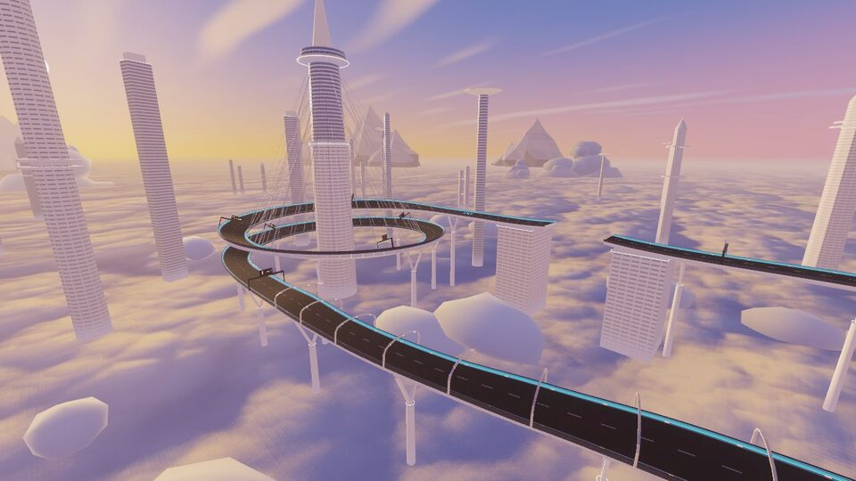
On the pageSur la pageនៅលើទំព័រ 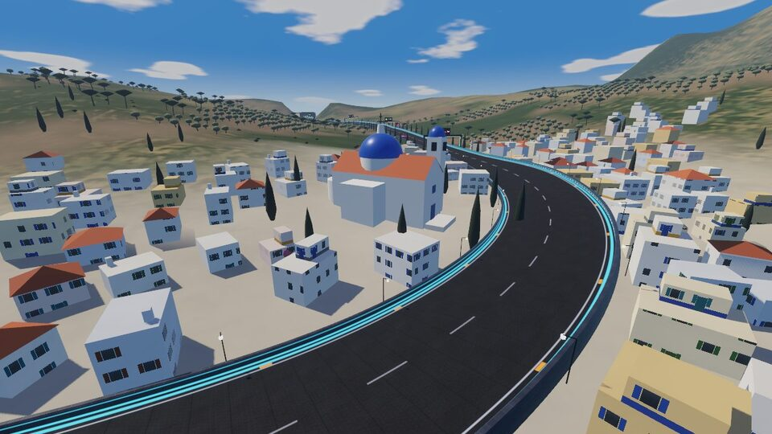
On the pageSur la pageនៅលើទំព័រ 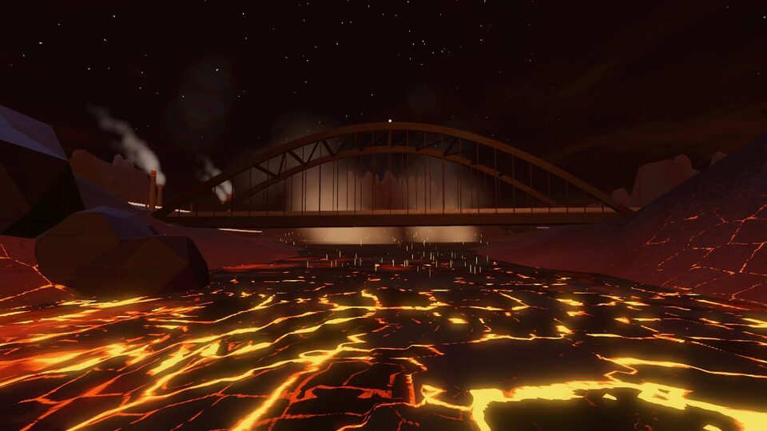
On the pageSur la pageនៅលើទំព័រ 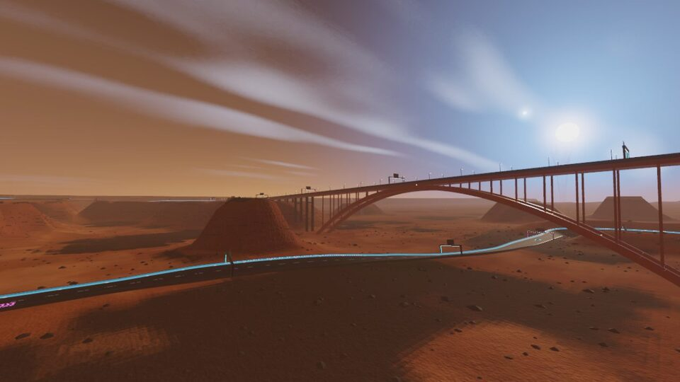
On the pageSur la pageនៅលើទំព័រ 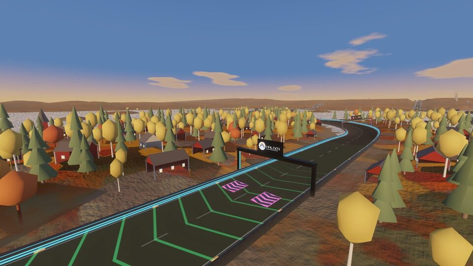
On the pageSur la pageនៅលើទំព័រ 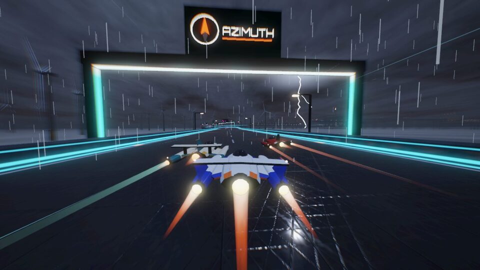
On the pageSur la pageនៅលើទំព័រ 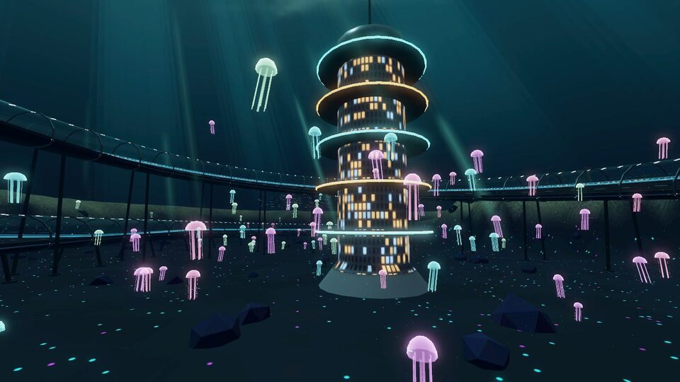
On the pageSur la pageនៅលើទំព័រ 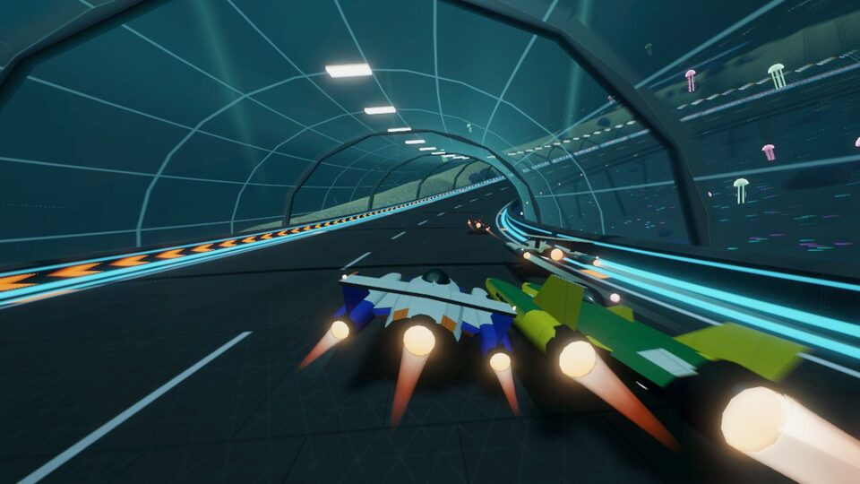
On the pageSur la pageនៅលើទំព័រ -
Added to the siteArrivée sur le siteចូលមកក្នុងគេហទំព័រ
The anti-gravity racer gets a card in Games and its own page in English, French and Khmer: the idea, the five circuits, the game modes and career, highlights, controls and a gallery of captures from the game’s repository.
Le jeu de course antigravité reçoit une carte dans Jeux et sa propre page en anglais, en français et en khmer : l’idée, les cinq circuits, les modes de jeu et la carrière, les points forts, les commandes et une galerie de captures tirées du dépôt du jeu.
ហ្គេមប្រណាំងប្រឆាំងទំនាញ ទទួលបានកាតមួយក្នុងផ្នែកហ្គេម និងទំព័រផ្ទាល់ខ្លួន ជាភាសាអង់គ្លេស បារាំង និងខ្មែរ៖ គំនិត សៀគ្វីប្រាំ របៀបលេង និងអាជីព ចំណុចលេចធ្លោ ការបញ្ជា និងវិចិត្រសាលរូបថតអេក្រង់ ពី repository របស់ហ្គេម។
8 captures8 capturesរូបថតអេក្រង់ 8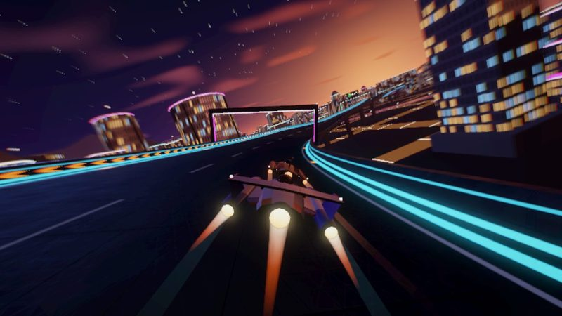
On the pageSur la pageនៅលើទំព័រ 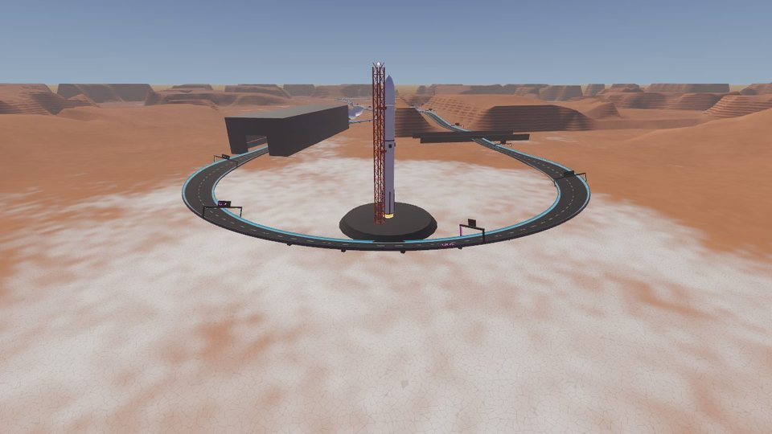
On the pageSur la pageនៅលើទំព័រ 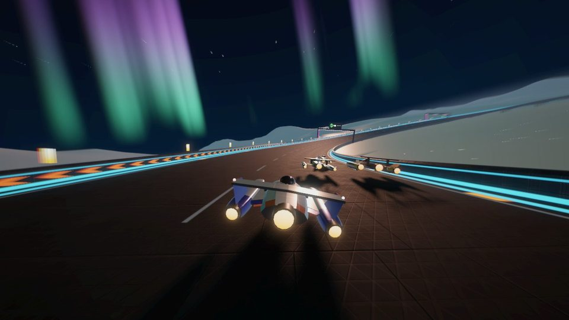
On the pageSur la pageនៅលើទំព័រ 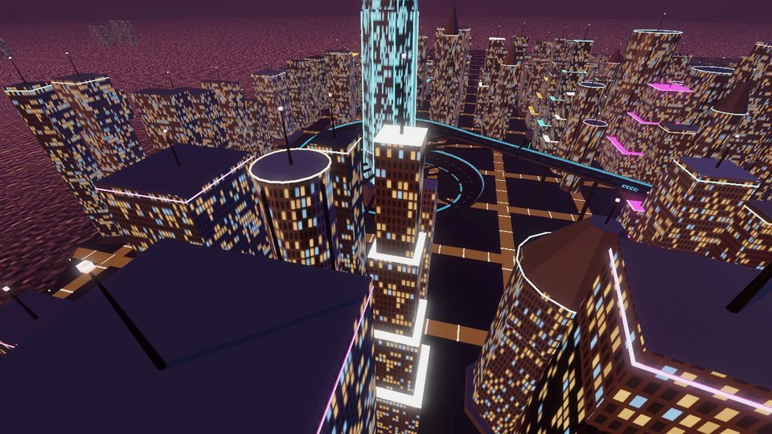
On the pageSur la pageនៅលើទំព័រ 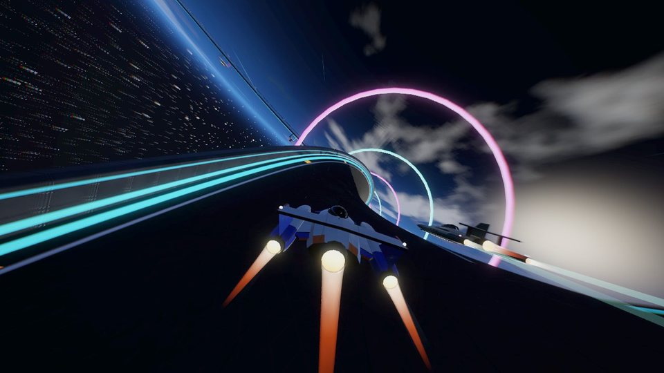
On the pageSur la pageនៅលើទំព័រ 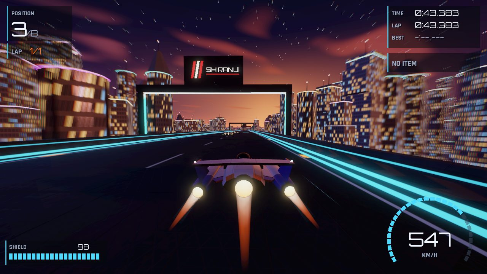
On the pageSur la pageនៅលើទំព័រ 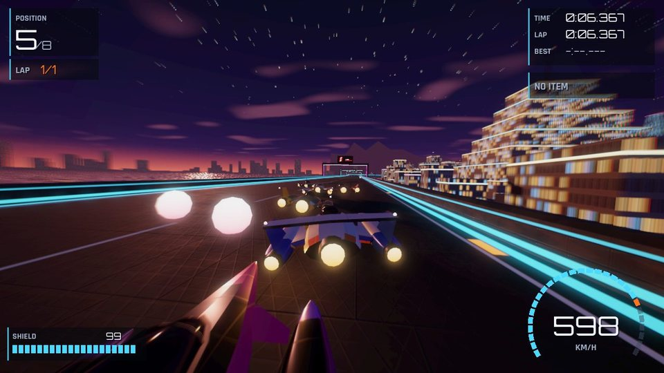
On the pageSur la pageនៅលើទំព័រ 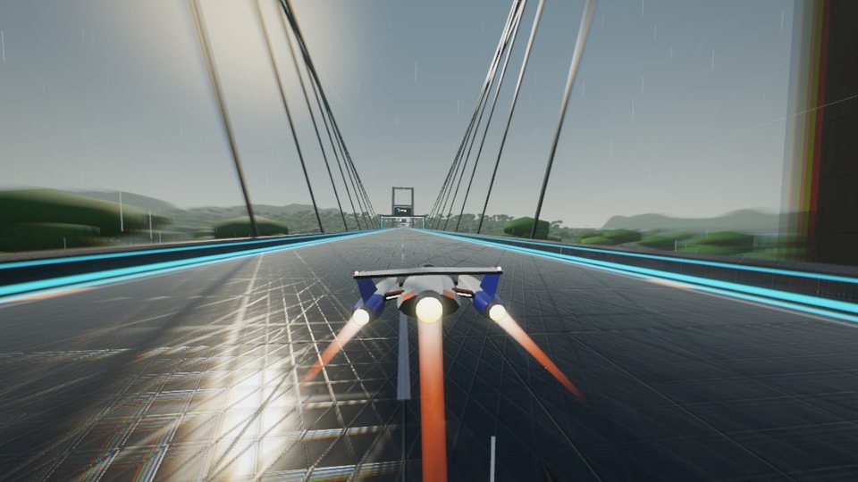
On the pageSur la pageនៅលើទំព័រ